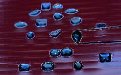

Jewelry
Here at Jean Kalen Jewelry, it is all about the jewelry! That's why 75% of our business is repeat business. We get that. We don't try to trick you into buying something inferior and pretend that we're giving you a special discount. We just give you the best jewelry we can find at the best price we can offer. It's that simple.
Ahh, diamonds... nothing quite says it like a diamond. We wholesale and retail diamonds, so our selection is always outstanding because we always save the best for ourselves! And at Jean Kalen's, if you're not satisfied with our selection, we aren't either. We'll special order any one-of-a-kind item you have in mind. By the way, our staff does not make commissions on sales. Instead they are just paid well to do their jobs well and the result is a no pressure, customer first approach that we think you'll find unique and refreshing. Kinda like our jewelry!
Jean Kalen is known for a wide selection of gems including topaz, sapphire, ruby, aquamarine, emerald, tahitian pearl, onyx, jade, and many more. Whatever gem you're dreaming about, you'll find it here in a variety of colors, shapes, and sizes to meet your particular taste and budget.
But if you don't find what you are looking for at JKJ, please try our sister store, Robbins Brothers.
© Jean Kalen Jewelry, All rights reserved.